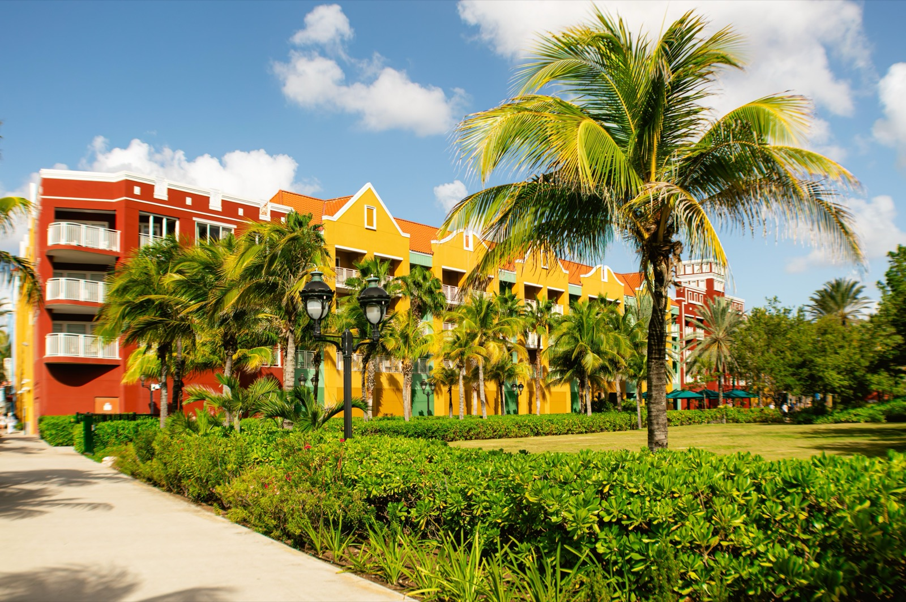
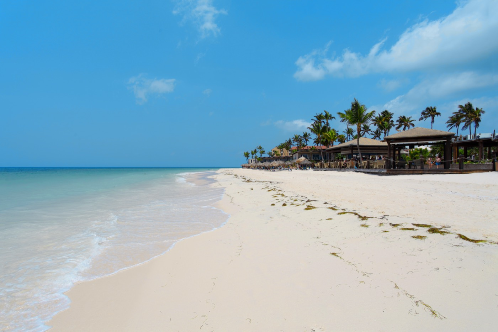

Moving to Aruba in 2026
Outside the hurricane belt, Dutch-standard healthcare, English everywhere, and one of the safest islands in the region — Aruba is a favorite for retirees. Here's the cost, the residency routes, and the tax fine print.

Aruba is where a lot of retirees quietly land — and for good reasons that go beyond the beaches. It sits far enough south to be outside the hurricane belt, its healthcare rivals North American and European standards, English is spoken everywhere alongside Dutch, and crime is very low. As a constituent country of the Kingdom of the Netherlands, it also offers a real path to permanent residency and eventually Dutch citizenship. The trade-offs are a higher cost of living and a genuinely complex tax regime worth understanding before you move.
Is Aruba safe?
Yes — Aruba is renowned as one of the safest islands in the Caribbean. Very low violent crime and political stability are central to its appeal, particularly for retirees who want first-world calm with a tropical backdrop. Ordinary precautions cover it.
The hurricane thing — why it matters
Aruba (with Bonaire and Curaçao) sits off the coast of Venezuela, south of the main Atlantic hurricane track, so it's only very rarely affected. For anyone weighing storm risk, that single fact separates the ABC islands from most of the Caribbean.
Cost of living
Aruba is comfortable but not cheap — nearly all food and goods are imported. Estimates cluster around $2,700/month for a moderate lifestyle including rent.
| Item (2026, approx.) | Typical figure |
|---|---|
| Single person, excl. rent | ~$1,150/mo |
| 1-bed, city center rent | ~$930/mo |
| Moderate all-in lifestyle | ~$2,700/mo |
Residency & the retirement route
Residency runs through Aruba's DIMAS office and requires proof of income, a clean criminal record, health insurance, and a valid passport (US/Canada/EU visitors get 90 days visa-free). The retirement path — a Dutch residence permit handled specifically for the island — has two income options:
- Guaranteed income status: prove a guaranteed annual income of about US$28,000.
- Without guaranteed status: prove about US$56,000/year (a “pensionado” category also exists for pension income).
- Not ready to commit? The “One Happy Workation” program lets Americans live and work remotely for up to 90 days.
Permanent residency comes after five consecutive years, and leads — with a Dutch civic-integration exam — toward Dutch (EU) citizenship.
Healthcare
This is one of Aruba's strongest cards. The system rivals North American and European standards, in a modern, English-speaking environment, anchored by the Dr. Horacio Oduber Hospital and the ImSan institute (both equipped to airlift complex cases to Curaçao). Health insurance is mandatory; long-term residents can eventually join the national AZV system, but private cover is required until then.
Taxes (read before you move)
Aruba taxes residents on worldwide income at progressive rates — historically steep (up to ~59%), though 2025 reforms introduced a zero-rate band on the first ~AWG 34,930 of income. Capital gains are taxed as income. This is complex and treaty-dependent, so specialized cross-border tax advice is genuinely important here.
Where expats actually live

Most expats settle in or near Oranjestad, the capital, and along the western coast where tourism and business concentrate — condos and low-maintenance homes near the beach are the popular picks.
Is Aruba right for you?
- Great fit if: you're a retiree who wants safety, excellent healthcare, English, and freedom from hurricane anxiety, with income to clear the residency threshold.
- Think twice if: you'll be tax-resident on high worldwide income (the rates are steep), or you want rock-bottom Caribbean costs.
Relocating is step one. Owning the home is step two.
SORA designs and builds homes across the tropics — with our deepest roots in Panama and Costa Rica, where residency is straightforward and building costs a fraction of the coastal Caribbean. If your move is really about a place of your own in the sun, it is worth seeing what a fixed-price build looks like before you commit to any one island.
Frequently asked questions
Is Aruba safe to live in?
Yes — Aruba is considered one of the safest islands in the Caribbean, with very low violent crime and political stability. It's a major reason retirees favor it. Normal precautions are sufficient.
Is Aruba in the hurricane belt?
No. Aruba sits far south off the Venezuelan coast, below the main Atlantic hurricane track, and is only very rarely affected — one of its biggest advantages over most Caribbean islands (shared with Bonaire and Curaçao).
How do you retire in Aruba?
Through a Dutch residence permit handled via Aruba's DIMAS office. You prove either a guaranteed annual income of about US$28,000, or about US$56,000/year without guaranteed status; a pensionado category exists for pension income. Health insurance is required, and permanent residency follows five continuous years.
How much does it cost to live in Aruba?
Around $2,700/month for a moderate lifestyle including rent, since nearly everything is imported. A single person spends roughly $1,150/month excluding rent, and a city-center one-bedroom rents around $930/month.
Sources & verification
Figures in this guide were checked against primary and authoritative sources on 27 July 2026. Immigration, tax, and cost figures change — always confirm the current rules with the official body or a licensed professional before acting.
- DIMAS Aruba — official residency-permit authority
- Departamento di Impuesto (Aruba tax) — official tax authority (worldwide-income rules)
- International Living — Aruba visas — corroborating retirement-income thresholds